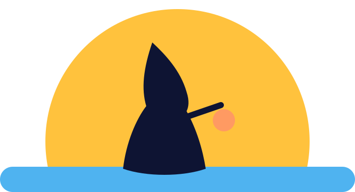
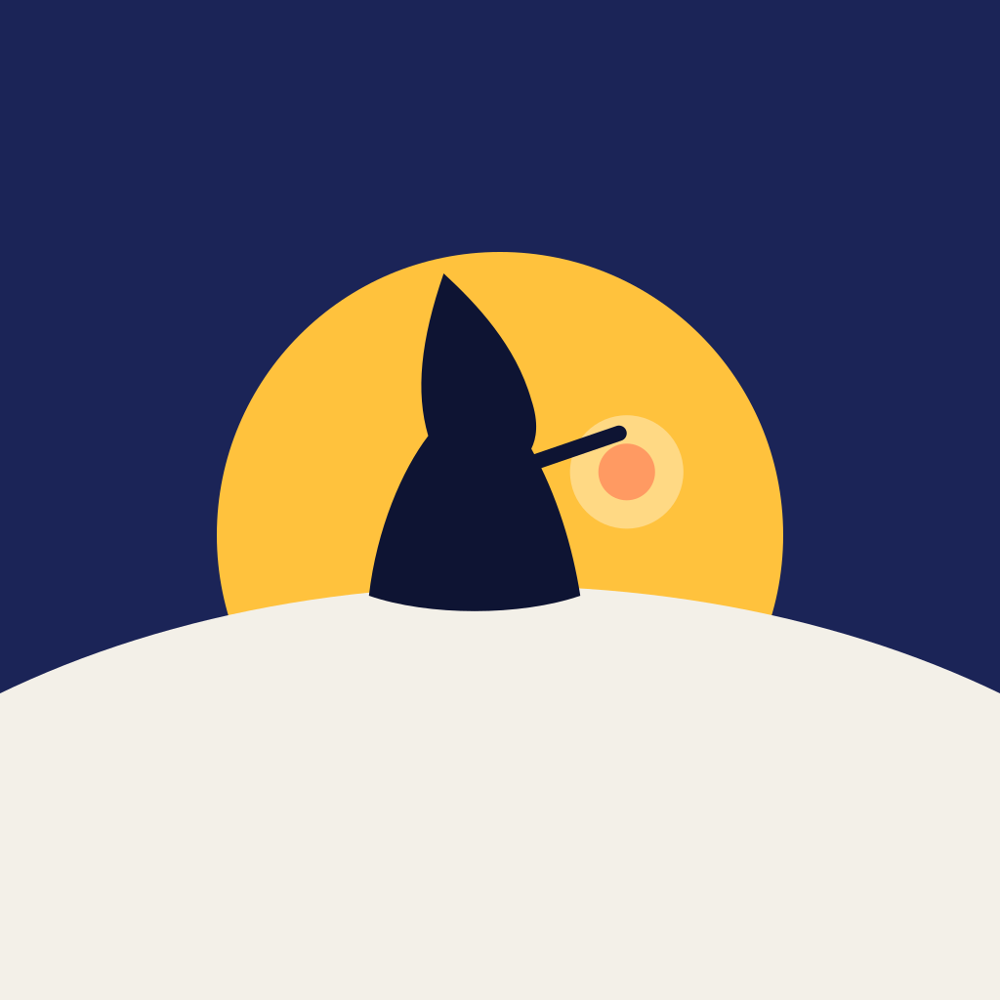

afferentEvery morning
is a print run.
The polar night is the bare screen: one ink, deep indigo, with a single gold lantern. Each minigame you finish pulls one colour back through the screen: gold, then ice, then aurora, then dawn. When the last pass lands, the sun lifts over the fell and the picture is complete. And every morning you keep the ritual, your fabric grows by one stripe in the colours you reached. Raita is Finnish for stripe.

Principles
Bold, graphic, modern Scandinavian. Confident like a Marimekko bolt, layered like an Alto sky, clean like a Google app.
Printed, not painted
Flat shapes, crisp edges, no outlines, no brush texture. One fine print grain over everything. Every frame could hang on a wall.
Six shapes build the world
Circle, dome, band, spike, dash, hood. Every prop, glyph and UI element is made from them. Nothing else gets in.
One pass per task
Each finished minigame prints one colour back. Colour is earned and never taken away; a miss only slows the pull.
Big and few
Oversized forms (the sun is half the screen wide), at most six colours per frame, at least 40% calm sky. Scale is the drama, not detail.
Circle means light
Sun, moon, lantern, the task Disc, the streak sun. A circle is always warm, alive or touchable. Hard rectangles never are.
Banded gradients
Skies are 5 to 8 flat bands with soft 2 px seams, never airbrush. Bands are how colour returns: they re-ink one by one.
App-native calm
Material 3 underneath, Raita tokens on top. All type is set in code; art carries no text. Two taps from bed to play.
The fabric remembers
The streak is a textile, one stripe per morning. A missed morning prints a quiet indigo rest stripe. The fabric never tears.
Key art
Generated with the STYLE prompt below (gpt-image-1.5). The first two are high quality, the others medium.


Night to dawn in four passes
The colour-return system as print passes. Drawn here in code from the six shapes: the style is procedural-friendly by design, so canvas can render it at 60 fps with any subset of images.
Order keeps the existing colour-return groups (yellow, blue, green, dawn). Each pass: the colour layer is revealed by a hard-edged circle that grows from the lantern (1.2 s, emphasized decelerate), the sky bands re-ink top to bottom with a 90 ms stagger, and the layer lands with a 2 px registration snap. The hooded figure's cloak always wears the newest pass colour. The bedside light steps one notch warmer and brighter with every pass, so the room wakes with the picture.
Palette
One ink family, four pass colours, two lights. No red anywhere: attention is apricot. Every pass colour reads above 7:1 on night ink.
Ink · pass 0
#0E1433Dark surface, silhouettes, the hood, text on light#1B2457Night sky bands, icon ground, containers#3D2F80Horizon at night, light secondary#F3F0E8Snow, moon, text on darkPasses · colour comes home
#FFC23D#B07A00#4FB3F0Fjord #1C4FA0#36D39APine #0B5C4B#FF9A62Lilac #B8A4FFGold: lantern, sun, birch light, primary action. Ice: lake, sea, secondary. Aurora: spruce, aurora ribbons, tertiary. Apricot and lilac: the dawn sky, attention (never alarm).
Light
#FFD37AGlow sprites; the only warm pixel at pass 0#FFF3DCBedside wake light at dawnDawn sky as ten flat bands, top to bottom. Pink sits only between lilac and apricot, as a seam, never as a field.
Typography
Two bundled OFL families: a Swedish grotesk for the confident moments, a Google-clean sans for everything you read. Type is always set in code.
Display is tight (-0.015 to -0.03em) and only ever one line. Numbers use tabular figures. Fonts in design/concept/nordic-graphic/fonts/, latin and latin-ext, variable weight, offline.
Shape language
Six primitives for the world; the same geometry for the interface. Round for light and touch, straight bands for land and time.
UI theme on Material 3
M3 structure and components (buttons, cards, navigation bar, type scale), Raita colour roles and shapes on top. Night scheme in the game, Morning scheme in the patient view and dashboard by day.
in a row
Start: the streak at restBig gold count in Familjen Grotesk, a half-sun glyph instead of a flame, and this week as fabric stripes coloured by how far each morning got. Today's stripe waits as a glowing outline. Begin is a filled M3 button in gold.
Task: Bite in the DiscMinigames open in a circle grown from the lantern (dotted path), so the world and the figure stay visible around it. No panel, no text. Progress is five catch dots under the Disc; the target ring in gold says where to look.
End: dawn and a quoteText waits until the sun has crested and sits over clear sky. One quote card in the Morning scheme, the streak count ticking up by one, today's stripe shown with every pass reached.
Patient view: the fabricMorning scheme, M3 navigation bar with a gold-tint active indicator. The streak becomes a textile you can scroll back through: a memento, not a score. Neutral, supportive copy only.
#FFC23D#5C4300#8FD0FF#1C4FA0#5FE3AE#0B5C4B#FFB38A#0E1433#141B3E#182047#1F2853#27305F#1C4FA0#FFC23D#3D2F80#E4DDFF#0B6B55#B6F5DA#8E3F12#FBF8F1#F7F4EC#F3F0E8#EDE9DF#E6E1D5Full role set with on-colours, outlines and inverse roles in theme.json. WCAG: onPrimary on primary 10.3:1, onSurface on surface 15.8:1 (night) and 17.0:1 (morning), onSurfaceVariant 9.0:1 and 7.1:1. Clinician dashboard: Morning scheme by default, tabular Figtree numbers, state chips stable ice, watch gold, check-in apricot, booster lilac, always with the text label.
Motion
M3 easing for every UI move; four signature moves for the world. Nothing shakes, nothing flashes, everything breathes at six per minute.
1200 ms · emphasizedDecelerate
140 ms · 2 px · standard
90 ms stagger · 600 ms per band
6000 ms · easeInOut · lamp 4000 ms
emphasizedDecelerate 400 msemphasizedAccelerate 200 ms500 ms / 380 msroll 600 ms, oncein 4000 · out 6000 msfixed 1000 ms, never the heart2400 ms600 ms fades, no snapLogo and app icon
The wanderer in front of a rising sun: the whole story in four shapes. Vector, so it stays sharp at 29 px and works in one colour.

Indigo ground, gold sun, snow dome, the hood with an apricot lantern. Full-bleed square, the OS applies the mask.
Wordmark in Familjen Grotesk 700, lowercase, -0.035em. The mark sits on an ice band: the first stripe of the fabric.
The image model could not hold the hood silhouette at icon scale, so the icon is drawn by hand as SVG from the same six shapes.
Illustration style
Reusable STYLE prefix for generate.py (plan_ng.json), plus the rules the procedural renderer follows.
What makes it ours
Three ideas no other wellbeing app or Nordic game uses together.
Dawn as a print run
Night is one ink; every minigame pulls one colour back through the screen. The player literally prints their morning. The metaphor explains colour return without a word, and every frame looks like a poster worth sharing.
A fabric, not a flame
Duolingo's pull of "keep it going", made kind: each morning weaves one stripe in the colours you reached. Rest days stay as quiet stripes. After a month you own a textile that is only yours, and nothing ever breaks.
The picture lights the bedroom
Each pass steps the bedside light warmer and brighter; the dawn pull lands as a 60% daylight fade. The game and the wake-up light are one sunrise, on the screen and in the room.